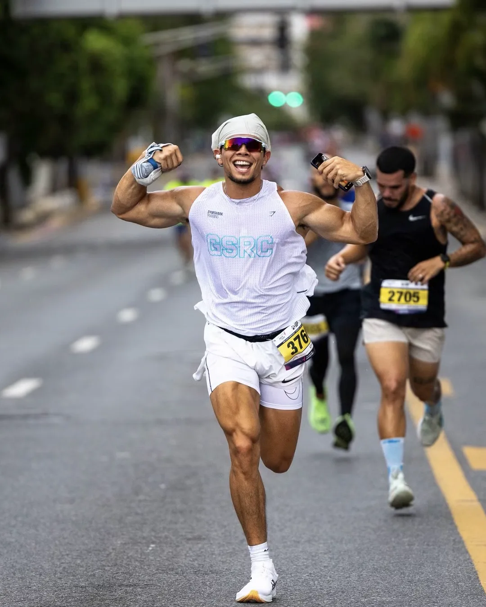
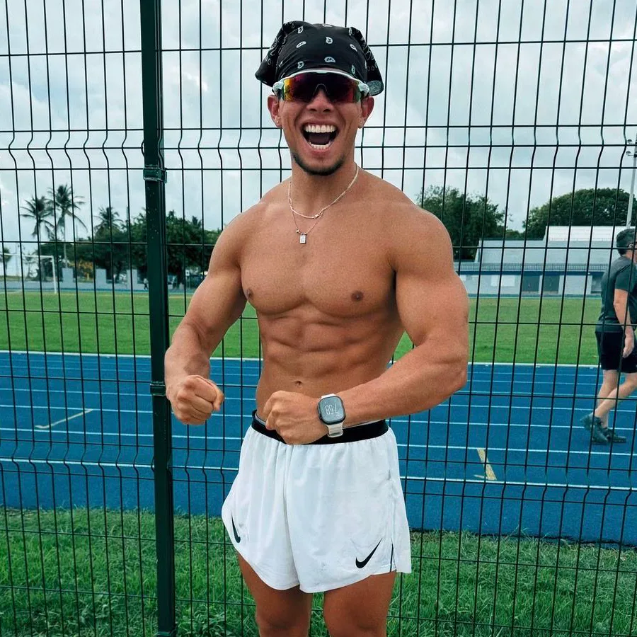
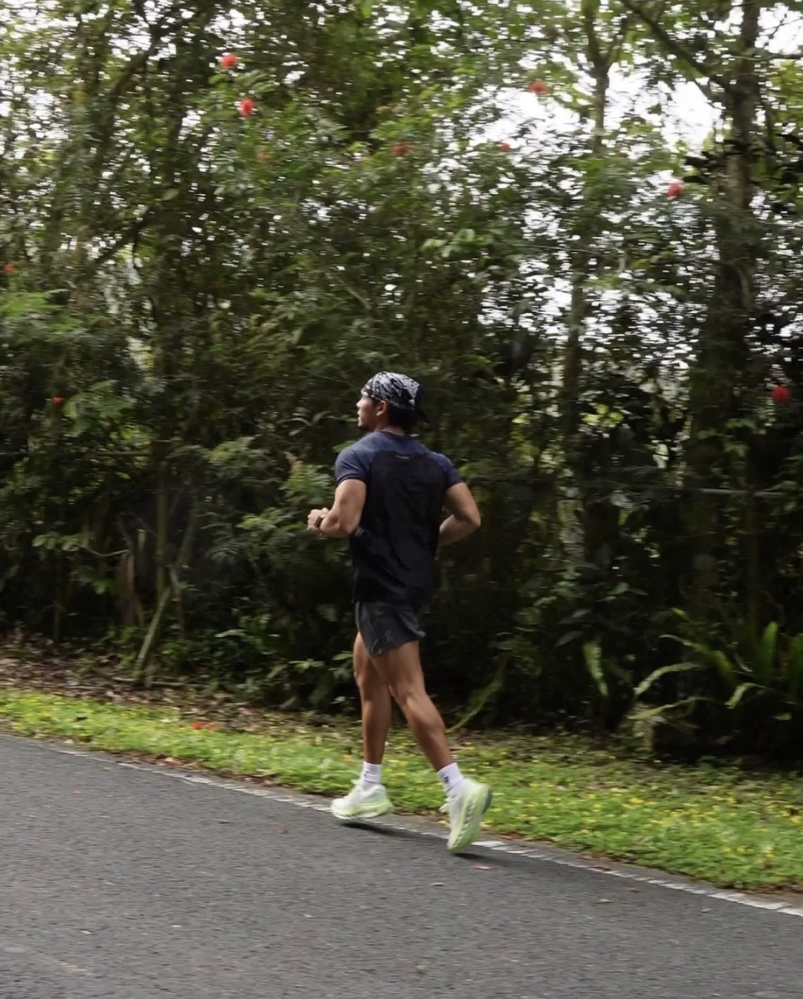
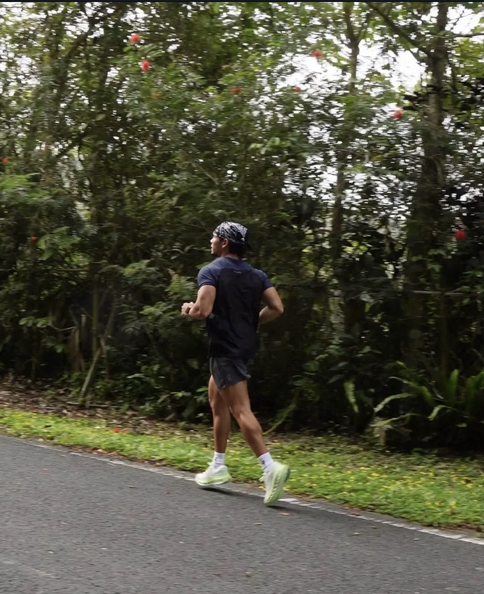

Fuerza y fondo, a tu ritmo.
Coaching de entrenamiento híbrido con Jan Medina. Online o en persona, en Puerto Rico.


Entrena con alguien que contesta.
Tu plan, a tu medida
Armado alrededor de tu meta, tu horario y el equipo que tienes. Nada de plantillas: si tu semana cambia, el plan también.
Fuerza y cardio, juntos
Pesas para ganar músculo y carrera o acondicionamiento para el fondo, organizados para que una cosa no le quite a la otra.
Jan, cada semana
Check-in por WhatsApp con fotos, cargas y tiempos. Jan revisa tu progreso en persona, no un sistema automático.

Resultados
En números
Cómo empezamos
-

Primero, hablamos. Me escribes por WhatsApp y hacemos una llamada corta: tu meta, tu horario, tus lesiones y el equipo que tienes.
-

Esa semana, te evalúo. Fuerza, movilidad y cardio. Medimos de dónde partes para que cada semana sepas cuánto avanzaste.
-

Después, tu plan. Pesas y carrera o acondicionamiento en la misma semana, online o en persona, armado alrededor de tu vida.
-

Cada semana, ajustamos. Check-in por WhatsApp con fotos, cargas y tiempos. Si tu cuerpo cambia, el plan cambia contigo.
Preguntas
- Online o en persona
- En Puerto Rico
- Precio en la llamada, sin compromiso
¿Es online o en persona?
Las dos. Puedes entrenar en tu gimnasio con el plan en el teléfono, o en persona con Jan en Puerto Rico. Lo decides en la llamada.
¿Necesito experiencia?
No. El plan empieza donde estás hoy, con cargas y distancias que puedes hacer bien, y sube cuando estás listo.
¿Qué es entrenamiento híbrido?
Fuerza y resistencia en el mismo programa: levantas para ganar músculo y corres o haces acondicionamiento para el corazón y los pulmones.
¿Cuánto cuesta?
Depende de la modalidad y del seguimiento que necesites. Jan te da el precio exacto en la llamada por WhatsApp, sin compromiso.
¿Cuándo veo resultados?
Depende de tu punto de partida y de tu constancia. Por eso medimos desde el primer día: cargas, tiempos y fotos, cada semana.



Tu después empieza con un mensaje.
Llamada corta por WhatsApp, sin compromiso. Jan contesta personalmente.
Agenda por WhatsApp